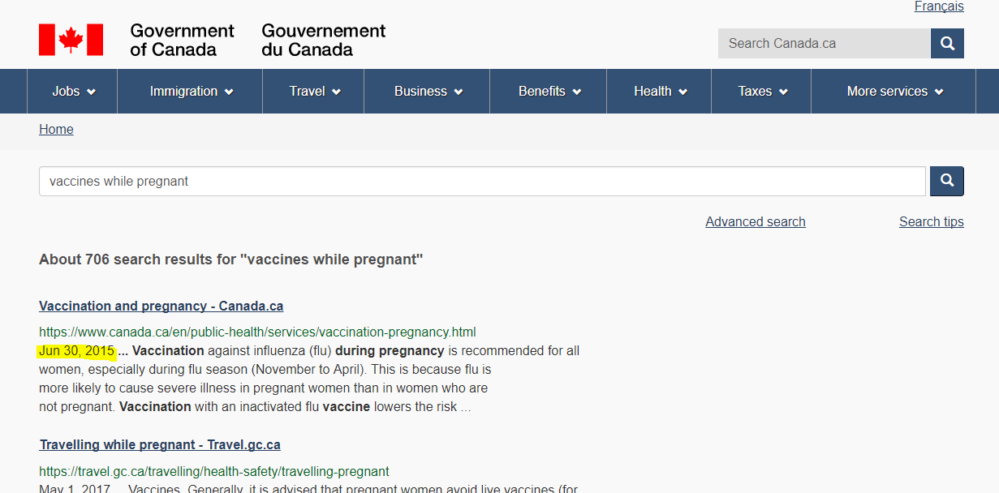

How people perceive older content on Canada.ca
We had some interesting results related to content age in a recent usability study. It showed us about how people perceive content based on its age. This might influence how we present the date updated on Canada.ca.
Seeing how old content is
Currently, there are two main ways to tell how up to date content is on Canada.ca. One is in a standard place on each page:

(One change we've just added to the Content and Information Architecture Specification is to display the date in a more human-readable format here: like "January 22, 2018", so should include that)
Since it's in the same place on every Government of Canada web page, people can count on finding it if they want to know when the page was last updated.
The second place the date appears is in search engine results. Both on Google:

...and on Canada.ca search:
In design guidance for Canada.ca, we say that you should:
"Use the date modified component to provide a person with the date that the content was last updated."
Typically, that means the date gets updated when there's a substantial change. Not just fixing a typo, but something that actually changes the content. But if there's no reason to update the content, that date won't change. It can start to look old even if it's still valid.
How content age influences people
People really notice the age of the content presented, especially if it's a subject that can be out of date quickly. Health information definitely fits into that category. The currency of the content (how up to date it is) is a key way people tell how credible it is.
* [http://dal.ca.libguides.com/c.php?g=257155] * [http://www.spry.org/sprys_work/education/EvaluatingHealthInfo.html#currency] * [https://www.researchgate.net/publication/221516871_Trust_and_mistrust_of_online_health_sites] * [http://libguides.wits.ac.za/c.php?g=145324&p=951898]Here's a video of a usability test participant disregarding the best page to solve his task due to its age (voice disguised):
Thinking information is out of date Transcript
sadflkjasdflkjfWe saw the same thing with other participants too. Even if the information is perfectly valid, people still thought there should be something newer.
What we can do about it
We should be reviewing content regularly as part of our content management lifecycle. Content should be refreshed as required, which will of course update the date modified as well. There's evidence that search engines value frequently updated content higher than less frequently updated too [Citation if there is one, otherwise remove].
However, it's entirely possible that a page you review may not need any updates. This is especially true in government, where any change may require multiple levels of approvals. That means pages may seem less trustworthy, even though the information is still as valid as when it was written.
To avoid this problem, you can update the date modified.
Newer content isn't always better
(Are we sure? Maybe it is... someone gave the example of an historical document, with the assumption that it's not going to get better. But even that could be superceded by new research...)
Search engine optimization implications
...